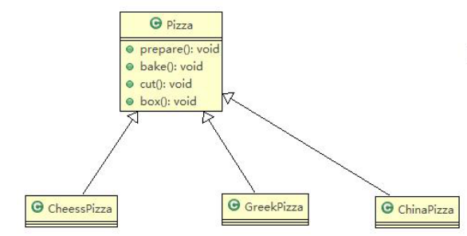

abbrlink: 2580072625
title: 设计模式之工厂模式
categories:
- 设计模式
tags:
- 设计模式
cover: https://github.com/goatsheep999/goatsheep999.github.io/raw/master/img/shejimoshi.png
top_img: https://github.com/goatsheep999/goatsheep999.github.io/raw/master/img/shejimoshi.png
前言：
折腾了两个晚上，终于把博客搭建的差不多了，这样就可以写文章了。虽然有些功能还没有实现，但是重在写文章，就不计较那么多了，抽空再锦上添花吧。
一个披萨项目：要求便于披萨种类扩展，便于维护。–开闭原则
披萨的种类：GreekPizz, CheesePizz等；
披萨制作方法：prepare, bake, cut, box等；
完成披萨店订购功能；
